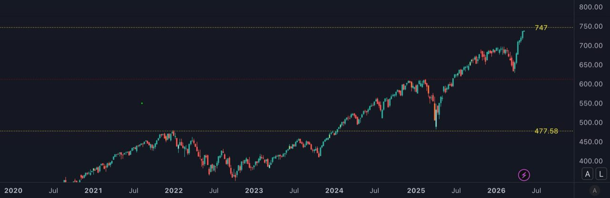

The $747 level was crossed. The calculated ceiling advances ~$0.83 per trading day and sits near $781 as of May 29, the maximum overshoot the historical envelope allows. No confirmed peak yet: the post-peak volume signal (20 sessions after the high vs. trailing 12-month average) has not triggered. At 164 trading days in the friction zone, the approach remains in the fast category (threshold: 252 days). All prices unadjusted. Verify on a chart with dividends off.
Counting trading sessions since the cycle-high close. The post-peak volume signal becomes final 20 sessions after the high.
Four structural price levels have capped SPY at every major cycle high since 1999. A backtest identifies three signals that separate bear-market tops from breakouts at these levels, plus a calculated ceiling (a margin computed daily and added on top of each level) that has marked every major peak within 2% over 25 years.
The 2022 all-time high came in at $477.71. The level was $477.58. The gap was $0.13.
SPY closed Friday at $737.62. The next level is $747.00.

How the levels are built, and what they have done
A fixed mathematical formula applied to SPY's earliest price data generates a series of structural price levels across its full history. The formula has not been modified since it was first run: a trader using it in 1999, before the dot-com peak, would have produced the same output. Four of those levels have acted as major ceilings over the last 25 years. Each has been reached, tested, and eventually left behind.
The pattern at every level has been the same. Price approaches from below, enters a zone of friction (the region within 7% of the level), and stalls. What follows is never clean: corrections, recoveries, failed attempts to push through, and eventually one of two outcomes.
The first resolution is a major correction or bear market, with SPY peaking near the level and falling sharply. The second is a breakout: after enough failed attempts, the level gives way permanently and price never returns.
Both have happened at every level.
| Level | Active Era | Major tops at this level | Largest correction | Breakout / Status |
|---|---|---|---|---|
| Level 1 | 1999 – 2013 | 2000 (dot-com), 2007 (GFC) | -56.5% (2007 – 2009) | 2013, never returned |
| Level 2 | 2014 – 2016 | 2015 (flash crash) | -14.3% | December 2016, never returned |
| Level 3 | 2018 – 2020 | 2020 (pre-COVID top) | -35.6% in 33 days | August 2020, never returned |
| $477.58 | 2022 – 2024 | 2022 bear market start 2024 breakout level |
-25.4% over 9M | Confirmed support, April 2025 |
The breakout is not a failure of the indicator. Every level that eventually broke higher had first contained price for months or years and produced at least one double-digit correction. Breaking higher is the completion of the cycle, not the exception to it. What history does not record is how long: the first level held for fourteen years and two bear markets, the second for two years. The clock at $747 is now running.
Two signals that separate bear markets from breakouts
A backtest across every approach to these structural levels in SPY's full history produced two findings with statistical support.
The first is the speed of approach. SPY enters a friction zone, defined as the region within 7% of the level, before eventually reaching the level itself. The time between entering that zone and reaching the peak price is a strong predictor of the decline that follows.
Approaches that peaked within 252 trading days (roughly one calendar year) of entering the zone had an average subsequent peak-to-trough decline of -37.9% across nine cluster measurements. Those nine clusters span five underlying bear-market events; four of the five produced declines of 25% or more. The 2015 mid-cycle correction (-14.3%) is the exception. Approaches that took longer than 252 trading days to peak had an average decline of -11.7%. Only 4 of the 15 slow approaches produced a decline above 15%.
The separation holds consistently across all 24 approaches in the dataset. A fast approach has less support built below it. When the level holds as resistance, the falls have historically been steeper.
The second signal is post-peak volume. Starting the trading session immediately after the peak day (the day SPY closed at its highest price for the cycle), measure the average daily volume over the next 20 sessions and compare it to the average daily volume over the prior 12 months. On every confirmed major top, that ratio was 1.46× or higher. On every clean breakout, it stayed under 1.24×. The two groups never overlap. Heavy volume in the weeks right after the peak means sellers are distributing into the early decline; quiet volume means price is simply moving through the level.
Both signals are derived from price and volume only: no macro variable, no earnings revision, no central bank announcement. The signals are in the tape.
A third signal arrives only after the break
A third signal arrives only after the top is set and the level has broken. It asks one question: what does the next rally do?
Every time a structural level has broken in this dataset, price has rallied back toward it. That rally resolves in one of two ways:
- Reclaim: the rally pushes back above the level and holds. The break was false. The bull market resumes.
- Failed retest: the rally peaks below the level. Sellers now control the level. The major decline continues.
The signal has preceded every major continuation in the dataset.
In every confirmed bear-market continuation, the rally that followed the broken level peaked below it:
- March 2000 peak → November rally peaked just below the prior level → market fell another −45% over two years.
- October 2007 peak → May 2008 rally peaked below the same level → market fell another −52% to the March 2009 bottom.
- February 2020 top → immediate bounce rejected within days → market fell −30% over the next two weeks.
- January 2022 peak ($477.71) → January 12 rally peaked at $471.02 (about $6 below the level) → market fell to $356.56 by October.
In every case, a rally that peaked below the broken level confirmed the major continuation. A rally that reclaimed the level ended the correction. Across the four independent bear-market continuations observed in the dataset, the average decline from the failed-retest peak is roughly −38%, with the range from −24% to −52%. The magnitude has tracked the macro regime: deeper in structural credit crises like 2000 and 2008, shallower in Fed-driven corrections like 2020 and 2022. The directional read has been consistent.
For the $747 setup, this signal cannot fire yet. Two prior events have to happen first: $747 must be touched, and then it must break. Only then does the next rally become diagnostic. If the rally fails to reach $747, sellers have taken control of the level and a deep decline is confirmed. If the rally pushes back above $747, the breakout case reopens, but a reclaim alone is not enough. Until price clears the calculated ceiling described in the next section and holds, even a reclaim can fail: the March 2000 top printed less than 1% above its ceiling before reversing into the dot-com crash. Neither outcome is visible yet.
The overshoot has a measurable ceiling
When SPY pushes above a structural level, the rally has historically extended somewhere between +0.03% (2022) and +9.0% (pre-COVID 2020) before reversing. That range looks wide, but it is not random. A separate measurement (applied to SPY every trading day) calculates a maximum margin price can travel above the level on that specific day. Think of it as a moving ceiling that sits some distance above the structural level: the structural level is the floor, the ceiling is added on top of it, and the gap between them is the room available for the overshoot.
The ceiling is a number produced by a calculation, not a price action. It advances by a small fixed amount each trading day and resets annually. At every major SPY top since 1999, the actual peak has landed within 2.1% of where this measurement placed the ceiling on the day of the high.
| Major top | SPY closing price at peak | Calculated ceiling that day | Peak vs ceiling |
|---|---|---|---|
| March 24, 2000 (dot-com) | $153.56 | $152.14 | +0.93% |
| October 9, 2007 (GFC) | $156.48 | $159.74 | −2.09% |
| February 19, 2020 (pre-COVID) | $339.08 | $335.27 | +1.12% |
| January 3, 2022 (ATH) | $477.71 | $477.08 | +0.13% |
Across the four tops, the peak landed an average of 1.07% from the calculated ceiling. The largest miss was 2.09%. In 2022, the ceiling sat $0.63 from the structural level itself: the system was effectively saying "no room above the level on this day." The rally died the same day $477.58 was first crossed. That zero-overshoot top was the ceiling and the floor meeting.
This is what the historical 0 to 9% overshoot range really measures. Not a fixed percentage. The daily gap between the structural level (a fixed floor) and the calculated ceiling (which moves). In 2007 the gap was about +0.5%, and price stopped at +0.5%. In February 2020 the gap was about +9%, and price stopped at +9%. The room available on the day is what determines the overshoot.
For the $747 setup, the calculated ceiling on May 11, 2026 sits at approximately $769, about +3% above the level. If a peak forms in the next several weeks while the ceiling stays in this zone, the historical pattern points to a top around $762-$784 (applying the 2% margin from the 25-year record). The ceiling advances by roughly $0.83 per trading day. A peak forming in mid-2026 places it near $819 (+10%). A peak forming after December 2026 falls into the next measurement cycle and the math resets.
The three signals described above (speed, volume, failed retest) answer whether a high is a major top or a clean breakout. The ceiling answers a different question: how far above the level the high can form. It is the only measurement in this analysis fully observable before the high is set. Speed describes how the approach got here. Volume confirms only after the high. The failed-retest signal arrives only after the level has broken. The ceiling is readable every trading day, and price has historically respected it within 2%.
Where the current setup stands
SPY entered the friction zone below $747 in approximately October 2025. The close on May 8, 2026 was $737.62, roughly 150 trading days into the zone. The level has not been touched yet.
The 2022 setup also peaked fast, at 99 days. But the shape of the current approach is different. The monthly chart shows five months of consolidation inside the zone before the current push toward $747. That is not a straight-line momentum run. Some base was built before the latest push. The structure is more measured than 2022.
This is the first time SPY has approached $747. The prior levels do show one consistent pattern: every first approach produced at least one correction of 14% or more before the level was eventually cleared. The April 2025 tariff crash already tested the prior level: SPY's intraday low on April 7, 2025 was $481.80, less than 1% above $477.58, before recovering +19% over the following 20 trading sessions. The prior level is now confirmed support.
In the five months before the current push, SPY formed a flat consolidation below the level, a pattern that reads as a top to anyone unaware of what lies above. Traders who shorted that consolidation are now watching price move away from them. A similar sequence (flat consolidation, then a violent push toward the level) has appeared in prior first approaches in this dataset. The resolution comes on contact, not before. Once $747 is touched, the volume signal in the following 20 sessions will distinguish a genuine top from a level being cleared. Until then, the market is still in the approach.
Reading the signal with care
In the last 25 years, four cycle highs have landed at structural levels (2000, 2007, 2020, 2022). That is precisely what makes the $0.13 precision at $477.58 meaningful: very few tests, each landing close. In the volume test, there are 4 observations per group. The 1.24–1.46× threshold is an observed gap in the data, not a calibrated cutoff. The finding is consistent. It does not support a precise forward probability.
Even $477.58 was a first approach when it was first tested: the 2022 ATH was the only prior interaction with that level, with the cluster entering in August 2021 and peaking five months later. The prior levels support the framework. They do not guarantee it applies at $747.
Speed is a time classification, not a guarantee. The current setup is fast: 150 days from zone entry, below the 252-day threshold. Two ways the reading can shift from here.
First, if SPY stays in the zone past day 252 (roughly October 2026) without peaking, the classification shifts from fast to slow. Historical slow-approach declines have averaged -11.7% versus -37.9% for fast.
Second, if $747 breaks decisively (SPY clears the calculated ceiling, currently around $769, and holds above it for several sessions rather than just poking through and falling back), the speed signal stops applying altogether. The framework then points price toward the next structural targets up: the midline of the current cycle, then the main level above it. Those targets are computable from the same formula that produced $747 and the prior levels, but are outside the scope of this article.
How to read this moment
This framework does not produce a buy signal or a sell signal. What it produces is a zone where the same question has been asked at every level: does this break higher, or is this the top of the cycle?
Severity is not knowable before the sequence plays out.
| Scenario | Observable signal | Historical parallel |
|---|---|---|
| Distribution | SPY peaks between $747 and the calculated ceiling (currently around $769, advancing over time); post-peak volume above 1.4x the 12-month average within 20 sessions | Consistent with 2000, 2007, Feb. 2020, and 2022 tops. Fast-approach mean decline: -37.9% (9 cases). |
| Consolidation | SPY peaks, volume stays below 1.25x; approach time extends past 252 trading days from zone entry | Shifts toward slow-approach pattern. Slow-approach mean decline: -11.7% (15 cases). |
| Breakout | SPY closes above $747 on expanding volume; no post-peak volume spike; holds above level for 10+ sessions | Consistent with 2013, 2016, and Aug. 2020 breakouts. Prior level ($477.58) becomes confirmed support; trend continues. |
The friction zone is not a verdict. At every prior level, price spent weeks to years in this zone before one outcome or the other became clear. The zone is active now.
One parallel worth noting
SPY is not the only major index at a structural level right now. The Hang Seng is simultaneously retesting the underside of its 35-year rising trendline.
Nineteen years of rolling data show HSI and SPY are weakly correlated, with an annual average of 0.22. Over the past two months SPY has rallied to within 1.3% of $747, without having touched it yet. HSI has consolidated over the same period. The two markets are not moving in tandem.
That low correlation has one known exception: acute global risk-off. In March 2020 it hit 0.60. If a reversal pattern develops at $747, whether HSI follows will depend on what drives it.
Past SPY declines driven by US-specific factors did not pull Hong Kong down. Global events did.
For anyone positioned across both markets, the practical question is what triggers any correction. Today's setup leans differently from the historical pattern. Trade frictions, oil dislocations, and pressure on global supply chains all point toward a more globally-transmitted shock than a purely US one. If that is the catalyst behind a correction at $747, the historical decoupling probably does not hold, and HSI moves with the US rather than against it. If the trigger turns out to be US-specific after all, the historical pattern still favors HSI as a relative haven.
I will publish a follow-up once $747 is first touched and the post-peak volume data becomes readable.